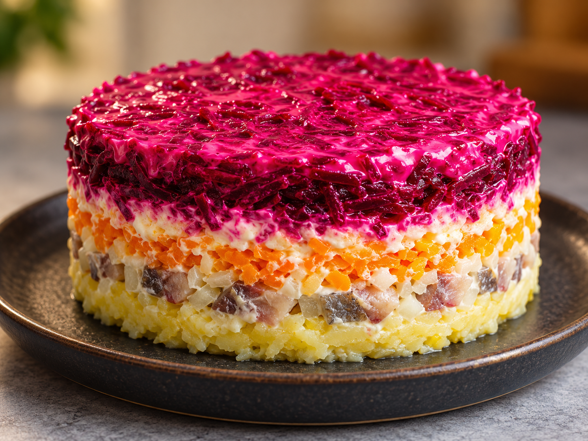

приготовление:
-
Завернуть 3 средние свёклы в фольгу и запекать при 200 °C около 1,5 часа. Готовность проверить деревянной шпажкой: она должна легко входить в овощи. Готовую свёклу полностью остудить.
-
Отварить до мягкости 3 средние картофелины и 3 средние моркови — это займёт примерно 30 минут. Проверить готовность шпажкой, слить воду и дать овощам полностью остыть.
-
Отдельно сварить вкрутую 4 яйца: готовить 10 минут после закипания воды, затем сразу залить холодной водой и остудить.
-
Остывшие овощи и яйца очистить и по отдельности натереть на крупной тёрке. Селёдку из 2 стандартных упаковок мелко нарезать.
-
Для аккуратной сборки обернуть внутреннюю сторону разъёмного кольца пищевой плёнкой и поставить его на плоскую тарелку. Выложить половину картофеля и плотно утрамбовать. Затем так же выложить половину моркови и половину яиц. Тонко покрыть лёгким майонезом, сверху распределить половину селёдки и половину свёклы. Добавить ещё один тонкий слой майонеза.
-
Повторить слои в том же порядке с оставшимися ингредиентами: картофель, морковь, яйца, майонез, селёдка, свёкла и майонез. Верх можно украсить майонезом и посыпать по краю шнитт-луком.
-
Убрать салат в холодильник на ночь, чтобы слои пропитались и уплотнились. Перед подачей аккуратно снять разъёмное кольцо и пищевую плёнку.